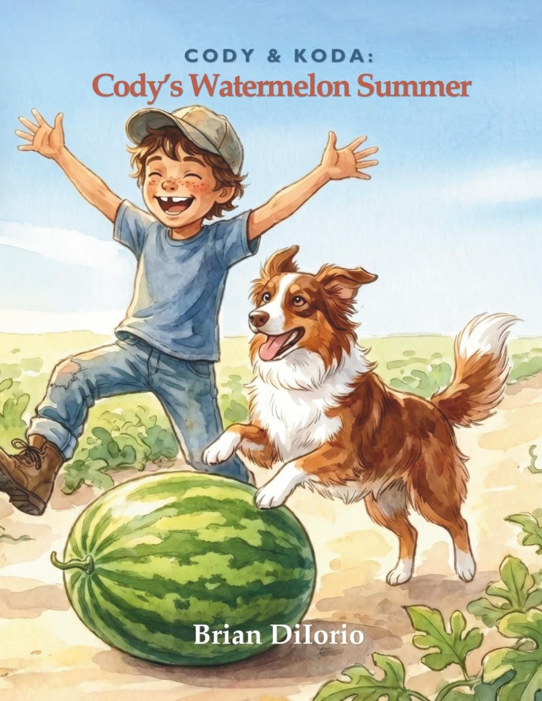

Some things you have to grow yourself.
Nine-year-old Cody Briggs has one row of the family watermelon farm all to himself, and one summer to prove what he can do with it. His Australian Shepherd, Koda, never leaves his boots. Cody plants a single packet of seeds and makes himself a quiet promise: see it through, no matter what.
A Texas summer doesn’t make that easy. The rain doesn’t come. Storms roll in after dark. One morning Cody finds his best vines chewed clean through. Every setback asks the same question. Give up, or get back to work?
By the time the county fair arrives, Cody has watered by hand until his arms ached and guarded his row through midnight storms. Win or lose, he’s about to find out what all that work was really worth.
A story about perseverance, patience, and quiet self-belief, where the lesson is felt through the story, never preached.
Join the mailing list for news on Book 2, The Disappearing Act, plus a welcome code for the shop.
Join the Mailing List